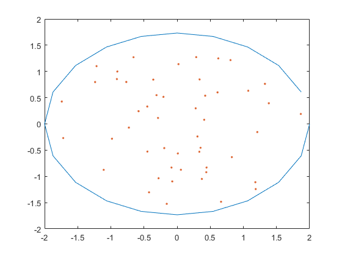
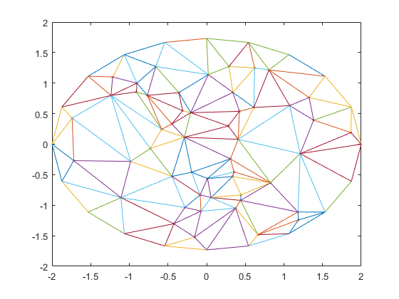
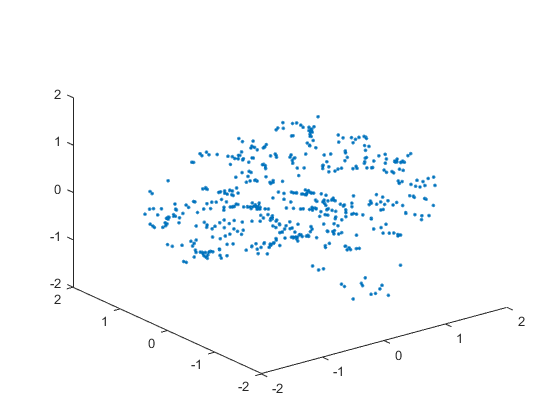

15336134 莫凡
使用有限体积法求解Poisson方程的第一边值问题−Δu=f 特化问题，我们令f(x,y)=x+y
先将区域Γ用一个内接多边形近似，然后在多边形内任取若干个点，按照这些点进行三角剖分。
对于每一个内点，顺次连接它相邻的三角形的重心，得到一个对偶区域，在这个区域上对f进行积分。
同时，对于每一个内点P，定义一个分片线性的插值基函数φP，使得对于每个三角形ABP，均有φP(P)=1, φP(A)=0, φP(B)=0。只需要解若干个三元线性方程组即可得到φ
φ的系数u通过求解如下线性方程组得出
i∑4Sqi1[(upi−up0)pi+1p0⋅pipi+1+(upi+1−up0)p0pi⋅pipi+1]=(f,ψp0)
其中ψ是对偶区域的特征函数，表示一个点是否在该区域内。
首先将椭圆按照圆心角等分，然后再在椭圆内随机取若干个点，得到

接着使用软件进行三角剖分

积算出来的散点图如下

除了个别的点，其他点的位置都和结果差不多
- tri 三角剖分软件
- area.m 计算三角形面积
- checkIn.m 检查一个点是否在某一三角形内部
- data.m 数据生成和预处理
- getPhi.m 生成 φ 函数
- solve.m 求解主程序